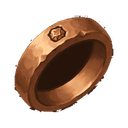
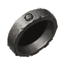
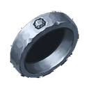
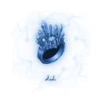
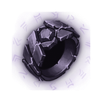
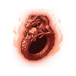

Rings
Read the guide →



Steel Ring T3
T3Hard steel ring
STATS Normal +0- Attack +3.6
- Defense +11
- Health +11
- Crit Chance +0.071%
- Dropped by
- Corrupted Guard Cursed Manor D3
Silver Ring T4
T4Shiny silver ring
STATS Normal +0- Attack +6.1
- Defense +18
- Health +18
- Crit Chance +0.091%
- Dropped by
- Frost Wisp Ice Fortress D4
Gold Ring T5
T5Royal golden ring
STATS Normal +0- Attack +10
- Defense +32
- Health +32
- Crit Chance +0.118%
- Dropped by
- Desert Stalker Desert Pyramid D5
Platinum Ring T6
T6Heavy platinum ring
STATS Normal +0- Attack +18
- Defense +53
- Health +53
- Crit Chance +0.152%
- Dropped by
- Void Horror Void Breach D6
Celestite Ring T7
T7Magic celestite ring
STATS Normal +0- Attack +30
- Defense +90
- Health +90
- Crit Chance +0.197%
- Dropped by
- Inferno Knight Magma Chamber D7

Adamantite Ring T8
T8Unbreakable ring
STATS Normal +0- Attack +51
- Defense +154
- Health +154
- Crit Chance +0.254%
- Dropped by
- Dark Titan Shadow Citadel D8

Obsidian Ring T9
T9Fire born ring
STATS Normal +0- Attack +87
- Defense +262
- Health +262
- Crit Chance +0.328%
- Dropped by
- Holy Behemoth Celestial Tower D9

Flamerite Ring T10
T10Soul of the dragon ring
STATS Normal +0- Attack +148
- Defense +445
- Health +445
- Crit Chance +0.424%
- Dropped by
- Void Dragonling Dragon Lair D10